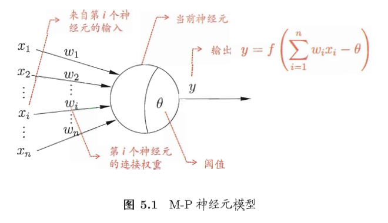
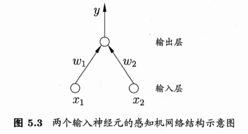
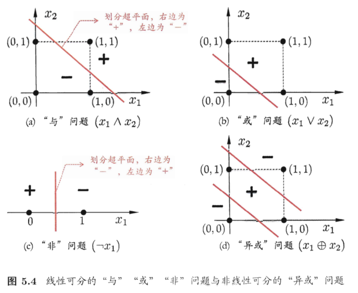
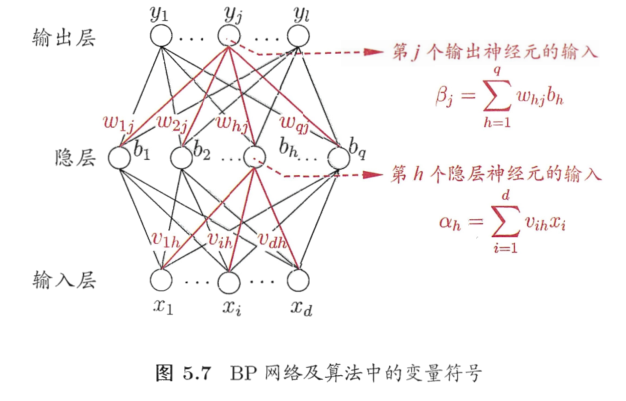
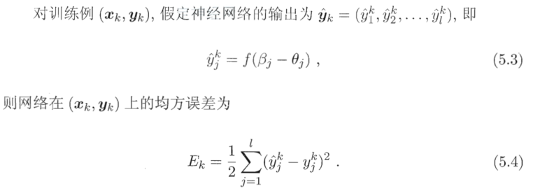
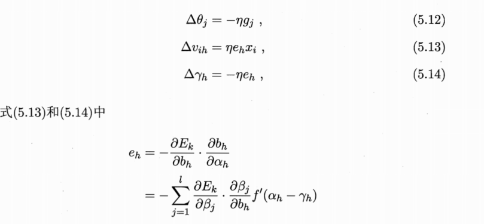
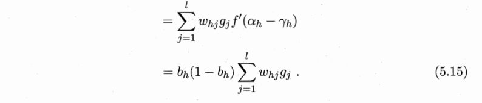
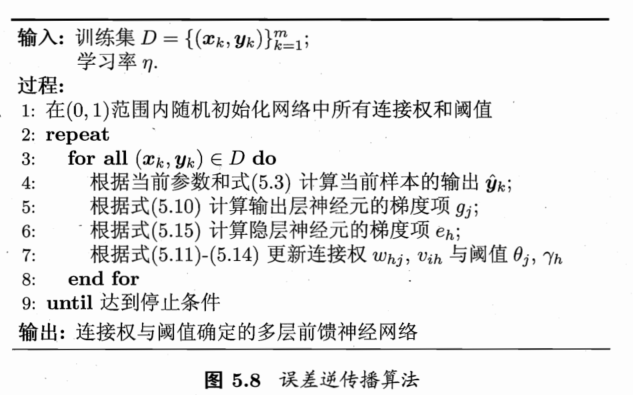
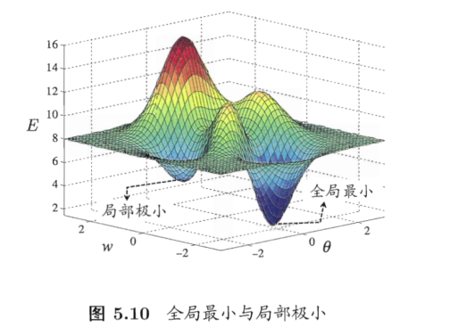

5.1 神经元模型
神经网络是由具有适应性得简单单元组成的广泛并行互连的网络，它的组织能够模拟生物神经系统对真实世界物体所作出的交互反应
神经网络最基本的成分是神经元(neuron)模型

常见的激活函数有：阶跃函数，sigmoid函数
5.2 感知机与多层神经网络
感知机(Perceptron)由两层神经元组成，能容易的实现逻辑与，或，非运算

但是它只拥有一层功能神经元(functional neuron),学习能力非常有限

常见的神经网络是具有多层层级结构的网络，例如多层前馈神经网络(multi-layer feedforward neural networks),神经网络的学习过程就是根据训练数据来调整神经元之间的连接权(connection weight)以及每个功能神经元的阈值
5.3 误差逆传播算法（反向传播）
误差逆传播(error BackPropagation)简称BP算法用来训练神经网络
给定训练集 \(D = \{(\vec{x_1},\vec{y_1}),(\vec{x_2},\vec{y_2}),…,(\vec{x_m},\vec{y_m})\},\vec{x_i} \ \in R^d, \vec{y_i} \ \in R^l \), 输出层第 j 个神经元的阈值用 \({\theta}_j \)表示，隐层第 h 个神经元用 \({\gamma}_h \)表示（都使用sigmoid作为激活函数）


BP算法基于梯度下降法(gradient descent),给定学习率\(\eta \)：
$$\Delta w_{hj}=-\eta \frac{\partial E_k}{\partial w_{hj}}$$
$$\frac{\partial E_k}{\partial w_{hj}}=\frac{\partial E_k}{\partial {\hat{y_j} }^k\ } \cdot \frac{\partial {\hat{y_j} }^k\ }{\partial \beta_j} \cdot \frac{\partial \beta_j}{\partial w_{hj}}$$
令:
$$g_j = -\frac{\partial E_k}{\partial {\hat{y_j} }^k\ } \cdot \frac{\partial {\hat{y_j} }^k\ }{\partial \beta_j}=-({\hat{y_j} }^k-y_j^k)f^{‘}(\beta_j-\theta_j)={\hat{y_j} }^k(1-{\hat{y_j} }^k)(y_j^k-{\hat{y_j} }^k)$$
$$\frac{\partial \beta_j}{\partial w_{hj}}=b_h$$
$$\implies \Delta w_{hj}=\eta g_j b_h$$
类似可得


方向传播的关键是\( e_h 和 g_j \)
学习率\( \eta \in (0,1)\)控制每一轮迭代的更新步长，若太大容易振荡，太小则收敛速度又会过慢，通常情况下设置每一轮迭代乘以一个衰减系数

可以证明，一个包含足够多神经元的隐层可以以任意精度逼近任意复杂度的连续函数，然而如何设置隐层神经元的个数与层数仍是个未决问题，实际应用中国通常靠试错法(trial-by-error)
但是由于其强大的表示能力，神经网络经常过拟合，两种策略来缓解过拟合：
- 早停(early stopping):分成训练集和验证集，验证集用来估计误差，若训练集误差降低而验证集误差升高则停止训练
- 正则化(regularization)
5.4 全局最小与局部最小
我们想要寻找全局最小误差，基于梯度的搜索是使用最为广泛的参数寻优方法，然而若误差函数具有多个局部极小，则不能保证我们找到的解是全局最小

常采用以下方法来跳出局部最小，从而进一步接近全局最小(大多是启发式的，缺乏理论保障)：
- 模拟退火(simulated annealing)，它在每一步都以一定概率接受比当前解更差的结果，从而有助于跳出局部最小
- 随机梯度下降
- 遗传算法(genetic algorithms)
5.5 其他常见的神经网络
5.5.1 RBF网络
RBF(Radial Basis Function,径向基函数)网络是一种单隐层前馈神经网络，它使用径向基函数作为激活函数，而输出层是对隐层神经元输出的线性组合。假定输入为d维向量\( \vec{x} \),输出为实值，则RBF网络可表示为：
$$\phi(\vec{x})=\sum_{i=1}^q \ w_i \rho(\vec{x},\vec{c_i})$$
其中q为隐层神经元的个数，\(\vec{c_i}和w_i \) 分别为第 i 个隐层神经元对应的中心和权重，\(\rho(\vec{x},\vec{c_i}) \)是径向基函数，常见的高斯径向基函数形如：
$$\rho(\vec{x},\vec{c_i})=e^{-\beta_i {||\vec{x}-\vec{c_i}||}^2 }$$
通常采用两步训练RBF网络:第一步确定神经元中心 \( \vec{c_i} \),常用的有随机采样，聚类等；第二步确定 \( w_i 和 \beta_i \)
5.5.2 ART网络
竞争性学习(competitive learning)是一种常用的无监督学习策略，ART(Adaptive Resonance Theory,自适应谐振理论)网络是竞争性学习的重要代表，ART较好的缓解了可塑性-稳定性窘境(stability-plasticity dilemma)，可塑性是指神经网络要有学习新知识的能力，稳定性是指神经网络在学习新知识时要保持对旧知识的记忆，这就使得ART网络具有一个很重要的优点：可进行增量学习(incremental learning)或在线学习(online-learning)
5.5.3 SOM网络
SOM(Self-Organizing Map,自组织映射)网络是一种竞争学习型的无监督神经网路，它能将高维数据映射到低维空间，同时保持在高维空间的拓扑结构
5.5.4 级联相关网络
将网络结构也当作学习的目标之一，并希望能在训练过程中找到最符合数据特点的结构
5.5.5 Elman网络
递归神经网络(recurrent neural networks)允许网络中出现环形结构，从而可让一些神经元的输出反馈回来作为输入信号，使得网络在t时刻的输出状态不仅与t时刻的输入有关，还与t-1时刻的网络状态有关，从而能处理与时间有关的动态变化
Elman网络是最常用的递归神经网络之一
5.5.6 Boltzmann机
有一类模型是为网络状态定义一个能量，能量最小化时网络达到理想状态，Boltzmann机就是一种基于能量的模型(energy-based model)
5.6 深度学习
深度学习模型就是更深层的神经网络，从增加模型复杂度来看，增加隐层数目比增加隐层神经元的数目更有效，但是它难以直接使用反向传播训练，因为误差在多隐层逆传播时，往往会发散而不能收敛到稳定状态
无监督逐层训练(unsupervised layer-wise training)是多隐层网络训练的有效手段，基本思想是每次训练一层隐结点，训练时将上一层隐结点的输出作为输入，而本层隐结点的输出作为下一层隐结点的输入，这称为预训练(pre-training),在预训练全部完成后，然后再对整个网络微调(fine-tuning),例如深度信念网络(deep belief network),这种预训练+微调的做法可视为将大量参数分组，对每组先找到局部比较好的设置，然后再基于这些局部较优的结果联合进行全局寻优，这样在利用模型大量参数提供的自由度的同时，有效的节省了训练开支
另一种节省训练开支的策略是权共享(weight sharing),例如卷积神经网络(CNN)
无论是DBN还是CNN,都是通过多层处理逐渐将初始的低层特征表示转化为高层特征表示后，用简单模型即可完成复杂的分类等学习任务，由此可将深度学习理解为进行特征学习(feature learning)或表示学习(representation learning),特征学习通过机器学习技术自身来产生好特征